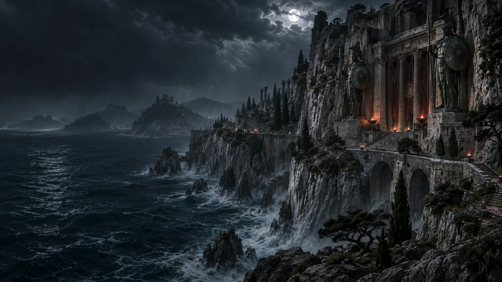

Weiße Felsen
Helle Felswände über dem Meer prägen das Bild der Inseln.
Weiße Felsen, dunkles Meer und monumentale Heiligtümer prägen die Inselwelt der Askari. Amazonen, Orakel und alte Überlieferungen bestimmen Skovos bis in die Gegenwart.
Skovos ist mit den frühesten Geschichten der Nephalem und den Ursprüngen der Menschheit verbunden. Die heutigen Bewohner, die Askari, entwickelten daraus eine eigene Gesellschaft, deren bedeutendste Traditionen von den Amazonen und den Orakeln geprägt werden.
Skovos besteht aus sehr unterschiedlichen Landschaften: vulkanische Gebiete im Westen, dichte Wälder im Osten und versunkene Regionen dazwischen. Die Hauptstadt Temis ist ein Zentrum der Askari. Ihre alten Stätten und Traditionen verbinden die Inselwelt mit Sanktuarios früher Geschichte.

Helle Felswände über dem Meer prägen das Bild der Inseln.
Kolossale, teils in Fels gehauene Bauwerke einer religiösen Tradition abseits Kehjistans oder Nahantus.
Buchten und Ankerplätze an den Küsten der Inselwelt.
Skovos ist die Heimat der Askari. Amazonen und Orakel prägen ihre Gesellschaft; an ihrer Spitze stehen eine Amazonenkönigin und eine Orakelkönigin.
Die Inseln bergen gefährliche Wildnis und uralte Stätten. Welche Geschichten über deren Wächter wahr sind, bleibt Teil der Überlieferung.
Die Inseln wurden in den früheren Diablo-Spielen nur selten zum Schauplatz, obwohl die Geschichte ihrer Bewohner weit zurückreicht.
In Lord of Hatred führt die Geschichte nach Skovos und in seine Hauptstadt Temis.
Die alten Traditionen der Askari und der wachsende Einfluss Mephistos machen die Inseln zu einem neuen Schauplatz des Konflikts.